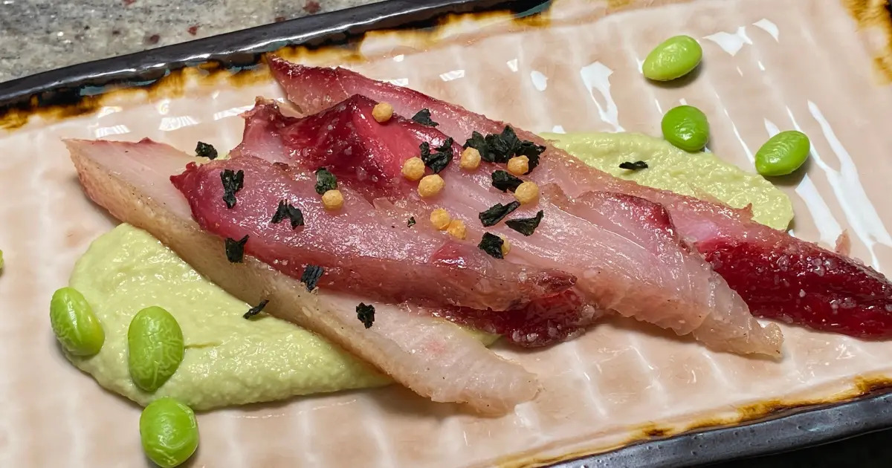

Sailor's Rift Saltfish

Description
Sailor's rift saltfish is a delicious salty cured fish snack that goes well plain or with a variety of sauces.
This dish is filled with protein to get you through the most arduous sea voyages. Don't set sail without scarfing down this tasty treat!
Ingredients
- 3 tbsp ground pepper
- 3 tbsp ground coriander
- 9 tbsp salt
- 7 ½ tbsp sugar
- 28 oz hamachi filet or other quality white fish filet, the curing process will generally make raw fish food-safe, but go with sashimi-grade fish just in case
- 1 ½ cup shelled edamame
- 1 ½ tbsp salt
- 1 ½ tsp sugar
- 3 tsp soy sauce
- 9.5 oz Inglehoffer cream style horseradish sauce or other creamy horseradish sauce
- 1 tbsp japanese mustard
- 1 cup water
- 8 tbsp japanese rice seasoning
Directions
- Mix the fish seasonings together and thoroughly coat the fish filets. Wrap them tightly in plastic wrap and put it in the fridge for 3 hours. Meanwhile, work on making the dressing but once the fish are done scrape off the excess seasoning.
- Heat up the edamame. Set aside a handful for garnish then dump the rest into a blender along with all the dressing ingredients besides the rice seasoning. Blend until smooth.
- Slice the fish into roughly 1/4 inch thick slices, and serve on top of a dollop of the dressing with some edamame and rice seasoning garnished on top. Or for a particularly rowdy bunch of sailors, have them dip into individual dipping bowls of dressing and avoid all the fanciness. These folks have adventuring to get back to.